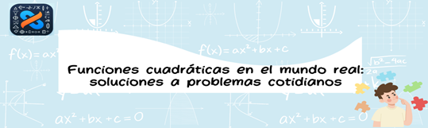

AVA
UNIDAD DE APRENDIZAJE 4
Introducción la unidad
¡Bienvenidos a la emocionante unidad dedicada a la aplicación a la vida cotidiana de las funciones cuadráticas! En esta sección del curso, exploraremos cómo las funciones cuadráticas, una herramienta fundamental en matemáticas, tienen una gran relevancia en nuestra vida diaria. Desde el movimiento de objetos lanzados hasta la forma de estructuras arquitectónicas icónicas, las funciones cuadráticas modelan una amplia gama de fenómenos naturales y situaciones prácticas.
Contenidos / Temáticas
Aplicaciones en la vida cotidiana: Finalmente, examinaremos diversas aplicaciones de las funciones cuadráticas en situaciones del mundo real, como el lanzamiento de proyectiles, la optimización de áreas y volúmenes, y el análisis de datos experimentales.
Aprendizajes esperados
- Identificar situaciones cotidianas que pueden modelarse mediante funciones cuadráticas, como el lanzamiento de un objeto, el movimiento de un proyectil o la forma de una parábola en una estructura arquitectónica.
- Desarrollar la habilidad para resolver problemas prácticos utilizando funciones cuadráticas, lo que les permitirá tomar decisiones informadas en situaciones de la vida real, como la optimización de recursos, la predicción de trayectorias y la planificación de proyectos.
Obra publicada con Licencia Creative Commons Reconocimiento Compartir igual 4.0